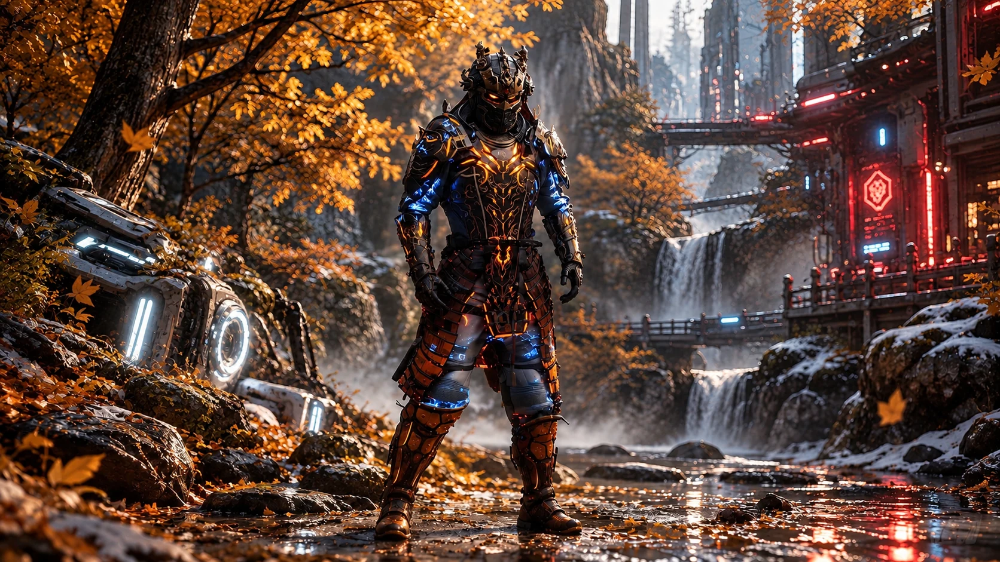
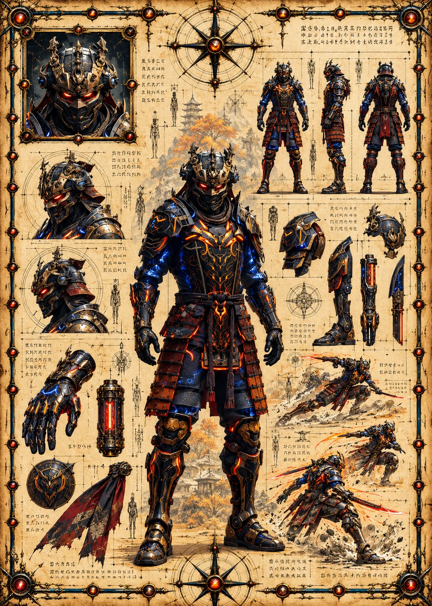

Field Observation
Omorivo investigates a white alien relic glowing beside the left path. The relic shows that alien artifacts have reached a secluded Earth 1 sanctuary.
 ©
©
GENEZYS ARCHIVE · EARTH 1 · Legionnaire
Harvest Molder
Identity & combat record
Archive node 01 / 05

Archive record
Omorivo can age a stone to dust, or an enemy's strength to nothing. The Year Shrink drains a target completely and punishes anyone who has nothing left to give. The Wardens say Omorivo's bond-stone is older than any other in the deepest cave.
Combat signature
Accelerates aging to dust: Sets the target's Cosmara to 0 and deals 70 pierce damage. If it was already 0, deals 150 damage instead.
Genezys 05:09 ™&©2026LEGIONS
Recovered visual record
Archive node 02 / 05

Full frame available // rotate device to landscape
Technical archive
Archive node 03 / 05

Classified field intelligence
Archive node 04 / 05
FIELD REPORT // RELIC INVESTIGATION
Field Observation
Omorivo investigates a white alien relic glowing beside the left path. The relic shows that alien artifacts have reached a secluded Earth 1 sanctuary.
Environment
Object Analysis
Key Findings
Motion archive
Archive node 05 / 05
Motion record not yet recovered